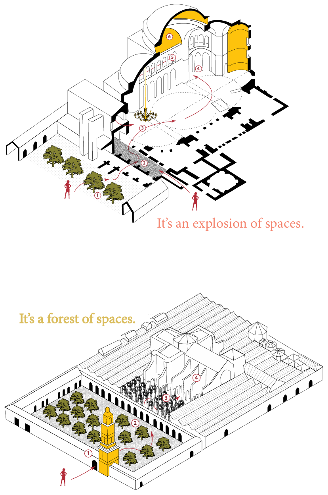

Cordoba VS Sophia
What happens when East meets West?

Undoubtedly, peace has not been the dominant condition of human history. Eastern and Western civilizations have conquered—and been conquered by—one another over the past two thousand years. Throughout this process, their religious traditions have frequently come into conflict. This tension is clearly reflected in architecture when East meets West in the name of God. T.S.Eliot, a prominent American poet and social critic, warned readers in his poem Little Gidding against approaching places of worship purely intellectually. Such a view might make the Greek architect Anthemius of Tralles turn in his grave; nevertheless, there is much to be said for this perspective. For nearly a thousand years, the world’s greatest Christian church was Hagia Sophia in Constantinople, which was converted into a mosque in 1453 and later served as a museum. In contrast, the Great Mosque of Córdoba has a Christian—and possibly pagan—prehistory and today functions as a Catholic cathedral. This raises an important question: what defines the architectural character of Hagia Sophia and the Great Mosque of Córdoba, and how have their architectural features been transformed differently in response to historical and religious demands?
1. Form
1-1. Exterior
When contrasted with the marvelously rich interior, the exterior of Hagia Sophia appears to be so plain without ornament. Basically, the exterior of Hagia Sophia produces a twofold impression. The first is the dark window openings functioning as pattern against the smooth wall surfaces. The second is the powerful bulges and swellings of domes which dominate its lower parts. These two contrasting effects are not in conflict, but complementary. Such highly artistic handling of the huge masses constitutes the clear indication of a style that heavily influenced on latter mosques throughout the Muslim empire, such as the Blue Mosque in Istanbul. And after the Ottmans conquest in 1453, four large minarets were added.
The Mosque of Cordoba was firstly built as a mosque, but it was consecrated as Christian church later. Especially, it is interesting to note that when it was conquered by Christians, a Gothic cathedral was inserted into the fabric of the mosque, which makes this building unique and magnificent. The building respected the typical form of a mosque - the enclosed forecourt, flanked by a minaret tower, opening onto a covered space for worship. Limestone ashlar crowned by sharply angled battlements enclose this building, and it resembles a fortress.

1-2. Interior
When originally constructed as a church, Hagia Sophia was covered with colorful marbles with gold and purple mosaics encrusted on the bricks that resulted in giving the whole area including huge columns a brighter and colorful aspect. Especially, the two archangels Gabriel and Michaels - the main object of interior decoration - depicted in marble, and various other mosaic panels that depicted other religious instances were seen in other parts of the interior. The gallery was filled with patterns of flowers and birds in white marble set against a background of black marble. However, when Hagia Sophia was converted to a mosque, two round jars, carved from a single block of marble each were newly added on each side of the entrance to the central nave. In some places, Islamic geometric designs and intricate wooden carvings of typical Islam architecture were crafted and plastered over previous Christian features of Hagia Sophia.
The most impressive feature of this mosque is the arcades. In the first line of arcades, the horseshoe arches and the upper round arches not only give height to the ceiling of this mosque but they also strengthen the construction and add greater internal illumination. In addition, these bunch of arches form a series of multiple aquaducts channeling rain water discharged towards the courtyard and side streets. Latticed windows placed to cover the opened arches allow light to come into the first part of the mosque. In the second expansion, the lighted dome of great beauty was built in the central aisle. This dome is analogous in its structure to those that make up the Mihrab. The dome holding up an enormous shell shows in the intercrossing of the eight arches of extraordinary perfection.

2. Circulation
As visitors get into the complex, a large courtyard with old citrus trees impresses them. Then, as they proceed towards the building, the sequencing of space begins. Their eyes are just about adjusted to the dark bays of the hypostyle mosque when they are drawn, almost magnetically, to a shaft of light. And once yielding to this vortex-like force, they feel that they are in some other enchanting building. This part is the Catholic Church that resides within the mosque. Visitors are prompted to look up at either the grand dome or down at the low-hanging chandeliers that accentuate the dome’s geometry. The impression it gives people is of being afloat in enclosed space. Leading one to the second floor are large winding ramps, originally used by horses, which also reveal intricate brickwork and accentuate geometry of the structure. This is not the intended circulation pattern as planned by its original builders but a recently adopted one to manage large crowds visiting the Hagia Sophia everyday. The ramps culminate onto a gallery that looks at an enormous atrium and visitors are unexpectedly greeted with an explosion of space. Adorning the vertical planes of the gallery are large medallions with Arabic inscriptions of Allah, the prophet, and his relatives. Contrasting to the Muslim ornamentation are the majestic mosaics from the Christian era that are elegantly poised throughout the building.
Approaching the mosque, the first thing one can notice is the massive bell tower on the building’s north side which replaced a minaret previously on the site. Along the outside of the building the wall takes on the appearance of a fortress, with an elaborate set of Moorish-style archway. Stepping through one of the doors one can enter the patio that performs as a public park, or Court of the Oranges, which true to its name contains a grove of orange trees, planted in symmetrical rows that replicate the forest of columns within the building. Entering the interior one can immediately be standing before the forest of arched columns which recede into the distance. The light in the space will play interesting tricks with the arches and varies pretty dramatically as one walks through the building. When you enter to very bright at the cathedral in the middle, it goes from rather dark and back and forth as one continue. In the corner of the building one can see glass cases with artifacts excavated from beneath the mosque, and along the side of the building a series of walls is lined with chapels. At the center of the building, the transition from the impressive mosque structure to the overwhelming cathedral is abrupt and rather jarring. But it is standing to suggest triumph over the Muslims who previously used this building.

3. Program
All Christian churches are traditionally built facing east while mosques are oriented toward Mecca. Based on the location of Istanbul, it happened that the apse was facing approximately the correct direction. The Mihrab was shifted slightly and the Christian Baptistery was converted into a Mausoleum. Although plaster covered some of the significant Christian mosaics, it seems that the layering of religious symbolism is still worthy of appreciation. The Ottomans also added pews. A dais for sermons and a loggia for the muezzin were added as well.
The original mosque was divided in two parts, one being an open courtyard for Ablution rituals, and a covered area for prayers. The prayer hall with a capacity for over 10,600 faithful was made up of twelve transversal naves and eleven longitudinal naves. Opposite the room from the entrance is the Mihrab, which was the focus of the mosque. As it faced in the direction of Mecca, if this building were mosque nowadays, one would see over 10,600 of multitude kneeling on their rugs before the Mihrab. The first expansion was imposed by the growth of population. Eight transversal naves were added and annexed to the primitive mosque. In the second expansion, the Ablutions courtyard was enlarged and enclosed by another facade, and a new minaret and additional twelve transversal naves were built. The final extension was the largest. The mosque was widened eastwardly by adding eight naves to the east facade. The Ablution courtyard was also proportionately widened, but it merely represents a decadent continuation of the previous extentions. Immediately after the reconquest of Cordoba by Christians, the main altar was placed in the center of the mosque, and the central niche was transformed into the sacristy. The construction of the grand chapel and crossing started in 1523. A central nave and two principle naves were added and the Christian cross on the plan of this building was formed at that time.

Bibliography
[1] Stan Allen, Points + Lines, Princeton University Press, 1999:93,94
[2] Juan A. Souto, La Mezquita Aljama de Cordoba, Conocer Press, 2004:76,77